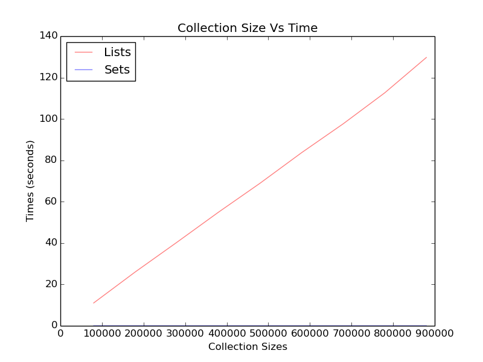

Tabu Experiments
The initial way the tabu-list was created was as a list. These are tests to see if that’s really the optimal way to do it.

List Times
| Size |
Time |
|---|
| 80000.0 |
11.0363438129 |
| 180000.0 |
26.0396318436 |
| 280000.0 |
40.3487291336 |
| 380000.0 |
54.9013621807 |
| 480000.0 |
68.9151000977 |
| 580000.0 |
83.6926100254 |
| 680000.0 |
97.6503689289 |
| 780000.0 |
112.64090085 |
| 880000.0 |
129.725217819 |
Line Regression
| Item |
Value |
|---|
| Slope |
0.00015 |
| Intercept |
-0.8 |
| Std Error |
1.1e-06 |
| R-Squared |
1 |
Set Times
| Size |
Time |
|---|
| 80000.0 |
0.00064492225647 |
| 180000.0 |
0.000654935836792 |
| 280000.0 |
0.000648975372314 |
| 380000.0 |
0.000648021697998 |
| 480000.0 |
0.000658988952637 |
| 580000.0 |
0.000645875930786 |
| 680000.0 |
0.000712871551514 |
| 780000.0 |
0.00066614151001 |
| 880000.0 |
0.00064492225647 |
Line Regression
| Item |
Value |
|---|
| Slope |
2.7e-11 |
| Intercept |
0.00065 |
| Std Error |
2.8e-11 |
| R-Squared |
0.11 |
Although the list-search is linear, the slope is relatively small because the size of the collections is growing so fast. The set-search is surpringly fast compared to the list-search. It looks to be constant time rather than linear. Although the list-search is relatively fast given the size of the collections (and the fact that I always used the worst case where the last item in the list was what I was looking for), using sets seems a much smarter way to go.